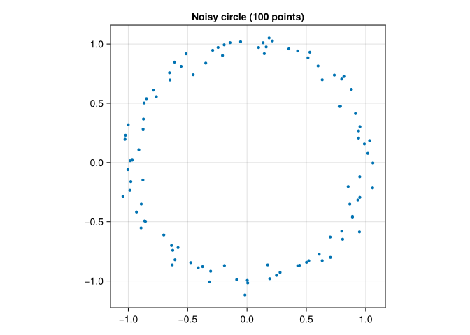
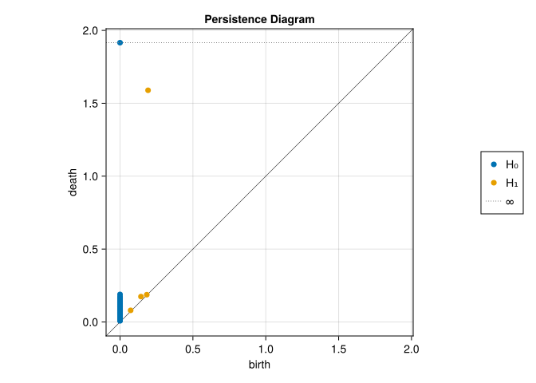
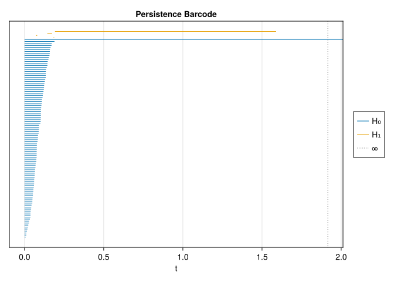
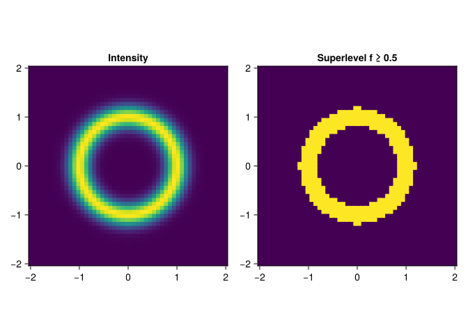
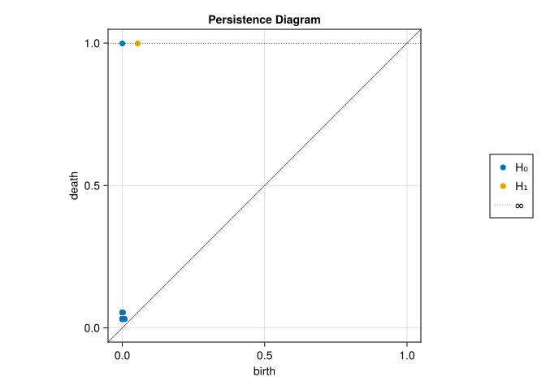
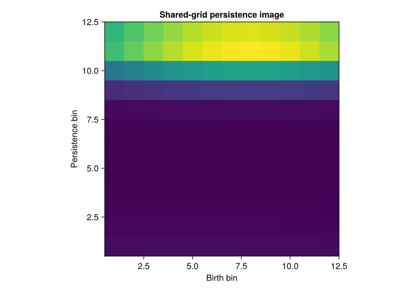
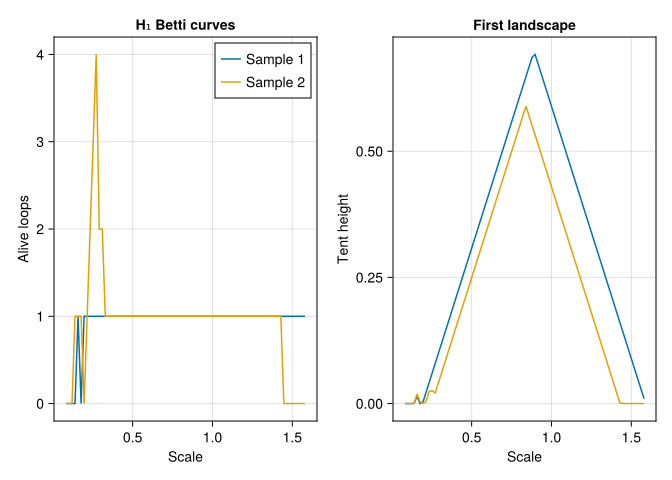
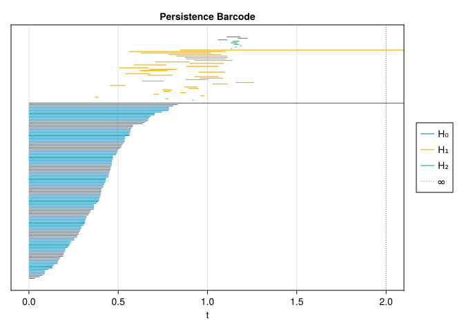

using CairoMakie
using MetricSpaces
using TDAPersistenceDiagrams
using TDARipserer
using TDAplots
using Random8 Computing persistent homology in Julia
“The purpose of computing is insight, not numbers.”
— Richard Hamming
In the previous chapter we traced a loop through a filtration by hand. Now we ask Julia to do the bookkeeping. The local stack separates three jobs: TDARipserer.jl computes persistence, TDAPersistenceDiagrams.jl compares and vectorizes diagrams, and TDAplots.jl draws them.
By the end of this chapter, you should be able to choose a filtration, read the result, and explain what a computational threshold leaves unknown.
8.1 A noisy circle
Use equally spaced angles so that this example isolates coordinate noise from sampling gaps. Both the spacing and the random seed are part of the experiment.
θ = 2π .* collect(0:99) ./ 100
circle_mat = permutedims(hcat(cos.(θ), sin.(θ))) .+
0.05 .* randn(MersenneTwister(42), 2, 100)
circle = EuclideanSpace(circle_mat)
fig = Figure()
ax = Axis(fig[1, 1], title = "Noisy circle (100 points)", aspect = DataAspect())
scatter!(ax, circle_mat[1, :], circle_mat[2, :], markersize = 6)
fig┌ Warning: Found `resolution` in the theme when creating a `Scene`. The `resolution` keyword for `Scene`s and `Figure`s has been deprecated. Use `Figure(; size = ...` or `Scene(; size = ...)` instead, which better reflects that this is a unitless size and not a pixel resolution. The key could also come from `set_theme!` calls or related theming functions. └ @ Makie ~/.julia/packages/Makie/UjJJY/src/scenes.jl:238

The ideal circle has one connected component and one loop. The finite sample initially has 100 components and no loops; as we increase the Rips scale, adjacent points connect, a loop forms, and eventually triangles fill it. We are looking for that intermediate-scale loop, not for the Betti numbers of the isolated sample at scale zero.
result = ripserer(Rips(circle), dim_max = 1)
println("H₀: ", length(result[1]), " intervals, ", count(bar -> !isfinite(bar), result[1]), " essential")
println("H₁ (birth, death): ", [(birth(bar), death(bar)) for bar in result[2]])H₀: 100 intervals, 1 essential
H₁ (birth, death): [(0.18346835497460048, 0.1871114495614885), (0.07285764247992646, 0.07967732301865385), (0.14361216043612823, 0.17398228382018466), (0.1922428947621583, 1.589189711268996)]dim_max = 1 requests \(H_0\) and \(H_1\). It does not mean triangles are irrelevant: detecting the deaths of \(H_1\) classes requires information from 2-simplices. The result is a vector whose first entry describes \(H_0\), second entry \(H_1\), and so on. Computations here use coefficients in \(\mathbb F_2\).
8.2 Reading the plots
persistence_plot(result)┌ Warning: Found `resolution` in the theme when creating a `Scene`. The `resolution` keyword for `Scene`s and `Figure`s has been deprecated. Use `Figure(; size = ...` or `Scene(; size = ...)` instead, which better reflects that this is a unitless size and not a pixel resolution. The key could also come from `set_theme!` calls or related theming functions. └ @ Makie ~/.julia/packages/Makie/UjJJY/src/scenes.jl:238

A finite diagram point \((b,d)\) represents an interval \([b,d)\), with persistence \(d-b\). Its \(L^\infty\) distance to the diagonal is \((d-b)/2\); these are related quantities, not the same number. Look for a separated \(H_1\) point and compare it with the short intervals. For this controlled circle we know why a long loop should be present. In an unknown dataset, length alone would not establish significance.
barcode_plot(result)┌ Warning: Found `resolution` in the theme when creating a `Scene`. The `resolution` keyword for `Scene`s and `Figure`s has been deprecated. Use `Figure(; size = ...` or `Scene(; size = ...)` instead, which better reflects that this is a unitless size and not a pixel resolution. The key could also come from `set_theme!` calls or related theming functions. └ @ Makie ~/.julia/packages/Makie/UjJJY/src/scenes.jl:238

Each bar tracks a homology class, not an individual edge. A loop’s representative may change as new simplices enter. The essential \(H_0\) interval records the component that remains once everything is connected.
8.3 Choosing a filtration and controlling cost
The input structure determines which construction is appropriate (Edelsbrunner and Harer 2010).
| Filtration | Useful input | What its scale means | Main computational issue |
|---|---|---|---|
| Rips | A point cloud or arbitrary finite metric | Maximum allowed pairwise distance in a simplex | Many cliques; cost rises quickly with sample size, threshold, and homology dimension |
| Alpha | Euclidean coordinates, especially in 2D or 3D | Ball geometry, restricted through a Delaunay triangulation | Sparse in low ambient dimension; triangulations become expensive in higher dimension |
| Cubical | A scalar array on a regular grid | A function value or intensity threshold | Exploits grid adjacency; cost depends on grid size and dimension |
For Rips, \(n\) points can have \(\binom n2\) edges and \(\binom n3\) triangles; this is why increasing both the point count and homology dimension is dangerous. The algorithm avoids explicitly storing every simplex, but combinatorial growth remains. Start with a modest subsample and a low dim_max, inspect coverage, and increase them only as needed.
threshold is a maximum filtration scale. cutoff is a minimum persistence retained in the output. They answer different questions. A small threshold can leave a real feature censored; a large cutoff can remove a real short feature. Neither is a statistical test.
For example, an Alpha computation uses the same 2D coordinates without requiring a Rips clique complex:
alpha_points = [Tuple(circle_mat[:, i]) for i in axes(circle_mat, 2)]
result_alpha = ripserer(Alpha(alpha_points), dim_max = 1)
println("Longest finite H₁ interval, Rips: ",
maximum(persistence(bar) for bar in result[2] if isfinite(bar)))
println("Longest finite H₁ interval, Alpha: ",
maximum(persistence(bar) for bar in result_alpha[2] if isfinite(bar)))Longest finite H₁ interval, Rips: 1.3969468165068377
Longest finite H₁ interval, Alpha: 1.5568758681806532This implementation uses circumdiameters for Alpha, rather than the circumradii common in other software. Rips also uses a diameter convention. The numeric units are comparable, but the filtrations and their interval endpoints need not be identical. Always check the convention before comparing results from different implementations.
8.4 Cubical sublevels and superlevels
In this implementation, array entries give the birth values of grid vertices. An edge or square appears at the maximum of the values at its vertices. Thus Cubical(f) includes the vertices with \(f\leq a\), and the cells all of whose vertices are present. It approximates a sublevel set using the grid.
A tiny example makes this inspectable:
f_small = [1.0 1.0 1.0; 1.0 3.0 1.0; 1.0 1.0 1.0]
small_result = ripserer(Cubical(f_small), dim_max = 1)
println("Cubical H₁ (birth, death): ", [(birth(bar), death(bar)) for bar in small_result[2]])
@assert length(small_result[2]) == 1
@assert birth(only(small_result[2])) == 1.0
@assert death(only(small_result[2])) == 3.0Cubical H₁ (birth, death): [(1.0, 3.0)]At level 1 the eight outer vertices and boundary edges form a loop. Squares touching the center must wait until level 3. Then the loop fills, giving the interval \([1,3)\).
On a larger grid, consider a bright annulus:
x = range(-2, 2; length = 50)
y = range(-2, 2; length = 50)
f = [exp(-((sqrt(xi^2 + yi^2) - 1)^2) / 0.05) for xi in x, yi in y]
fig = Figure(size = (800, 350))
ax1 = Axis(fig[1, 1], title = "Intensity", aspect = DataAspect())
heatmap!(ax1, x, y, f)
ax2 = Axis(fig[1, 2], title = "Superlevel f ≥ 0.5", aspect = DataAspect())
heatmap!(ax2, x, y, Float64.(f .>= 0.5))
fig┌ Warning: Found `resolution` in the theme when creating a `Scene`. The `resolution` keyword for `Scene`s and `Figure`s has been deprecated. Use `Figure(; size = ...` or `Scene(; size = ...)` instead, which better reflects that this is a unitless size and not a pixel resolution. The key could also come from `set_theme!` calls or related theming functions. └ @ Makie ~/.julia/packages/Makie/UjJJY/src/scenes.jl:238

Sublevels start with the dark regions; they do not grow out of the bright peaks. To insert bright values first, use \(g=M-f\), where \(M=\max f\). Then \(g\leq a\) is exactly \(f\geq M-a\). The returned diagram is expressed in \(g\) coordinates: increasing its scale means decreasing the original intensity threshold. A birth at \(b\) corresponds to intensity \(M-b\), and a finite death at \(d\) corresponds to \(M-d\).
result_sublevel = ripserer(Cubical(f), dim_max = 1)
result_superlevel = ripserer(Cubical(maximum(f) .- f), dim_max = 1)
persistence_plot(result_superlevel)┌ Warning: Found `resolution` in the theme when creating a `Scene`. The `resolution` keyword for `Scene`s and `Figure`s has been deprecated. Use `Figure(; size = ...` or `Scene(; size = ...)` instead, which better reflects that this is a unitless size and not a pixel resolution. The key could also come from `set_theme!` calls or related theming functions. └ @ Makie ~/.julia/packages/Makie/UjJJY/src/scenes.jl:238

The bright annulus creates a superlevel loop before its interior is included. All entries eventually enter this finite array, so the final rectangle is filled. If your application means to exclude background entirely, a late background value alone is not sufficient: stop the filtration before that value, or use an explicitly masked construction. We make that choice carefully in the digits chapter.
8.5 Three ways to make a fixed feature vector
Diagrams have varying numbers of points. Fixed-size summaries let ordinary statistical models consume them, at the cost of losing information.
A persistence image changes coordinates to \((b,d-b)\), applies a weight that vanishes at the diagonal, smooths the points, and discretizes the surface (Adams et al. 2017). sigma controls the Gaussian width in filtration units; size controls resolution. The grid is fitted on a collection, not separately on each sample. A constant birth coordinate can yield a single-column image in this package.
Here two noisy samples share one fitted transformation:
circle2_mat = permutedims(hcat(cos.(θ), sin.(θ))) .+
0.10 .* randn(MersenneTwister(43), 2, 100)
result2 = ripserer(Rips(EuclideanSpace(circle2_mat)), dim_max = 1)
training_diagrams = [result[2], result2[2]]
image_transform = PersistenceImage(training_diagrams; size = 12, sigma = 0.15)
img = image_transform(result[2])
fig = Figure()
ax = Axis(fig[1, 1], title = "Shared-grid persistence image", aspect = DataAspect(),
xlabel = "Birth bin", ylabel = "Persistence bin")
heatmap!(ax, permutedims(img))
fig┌ Warning: Found `resolution` in the theme when creating a `Scene`. The `resolution` keyword for `Scene`s and `Figure`s has been deprecated. Use `Figure(; size = ...` or `Scene(; size = ...)` instead, which better reflects that this is a unitless size and not a pixel resolution. The key could also come from `set_theme!` calls or related theming functions. └ @ Makie ~/.julia/packages/Makie/UjJJY/src/scenes.jl:238

The package ignores infinite bars in persistence images. If every training diagram is empty or essential-only, there is no finite domain to fit: choose a justified explicit domain with PersistenceImage((pmin, pmax), (bmin, bmax); ...). The fitted object then returns the same-shaped zero image for an empty diagram. The shape and digit chapters demonstrate these edge cases.
A Betti curve counts the intervals alive at scale \(t\). A landscape replaces an interval \([b,d)\) by the tent \(\max(0,\min(t-b,d-t))\); its first layer is the highest tent at each \(t\), its second layer the second-highest, and so on (Bubenik 2015). Unlike a Betti curve, its height encodes how far a feature is from dying or being born.
betti_transform = BettiCurve(training_diagrams; length = 80, integrate = false)
landscape_transform = Landscape(1, training_diagrams; length = 80)
betti_features = betti_transform.(training_diagrams)
landscape_features = landscape_transform.(training_diagrams)
@assert all(length(v) == 80 for v in betti_features)
@assert all(length(v) == 80 for v in landscape_features)
# These APIs sample at the midpoints of equal-width buckets.
curve_times(curve) = [curve.start + (i - 0.5) * (curve.stop - curve.start) / curve.length
for i in 1:curve.length]
fig = Figure(size = (850, 350))
ax1 = Axis(fig[1, 1], title = "H₁ Betti curves", xlabel = "Scale", ylabel = "Alive loops")
ax2 = Axis(fig[1, 2], title = "First landscape", xlabel = "Scale", ylabel = "Tent height")
for i in eachindex(training_diagrams)
lines!(ax1, curve_times(betti_transform), betti_features[i]; label = "Sample $i")
lines!(ax2, curve_times(landscape_transform), landscape_features[i]; label = "Sample $i")
end
axislegend(ax1)
fig┌ Warning: Found `resolution` in the theme when creating a `Scene`. The `resolution` keyword for `Scene`s and `Figure`s has been deprecated. Use `Figure(; size = ...` or `Scene(; size = ...)` instead, which better reflects that this is a unitless size and not a pixel resolution. The key could also come from `set_theme!` calls or related theming functions. └ @ Makie ~/.julia/packages/Makie/UjJJY/src/scenes.jl:238

integrate = false samples the Betti number at each bucket midpoint, giving integer counts. The default integrated Betti curve averages within each bucket and may give fractional values. The plotted line segments interpolate the sampled counts for display; fractional heights between midpoints are not actual Betti numbers. All these summaries must retain their training grid when transforming held-out data. A first landscape alone loses information about simultaneous loops; add more layers when that distinction matters.
8.6 Diagram distances
Bottleneck distance minimizes the worst \(L^\infty\) matching cost; \(p\)-Wasserstein distance minimizes the sum of the \(p\)-th powers and then takes the \(p\)-th root. Augment both diagrams with arbitrarily many copies of the diagonal, writing \(D_1^\Delta\) and \(D_2^\Delta\). The matching \(\gamma\) is a bijection between those augmented multisets. This lets an unmatched point on either side be paired with the diagonal:
\[ d_B(D_1,D_2)=\inf_\gamma\sup_{x\in D_1^\Delta}\|x-\gamma(x)\|_\infty, \qquad W_p(D_1,D_2)=\left(\inf_\gamma\sum_{x\in D_1^\Delta}\|x-\gamma(x)\|_\infty^p\right)^{1/p}. \]
For finite \(H_1\) intervals we can compare the two circles directly:
@assert all(isfinite, result[2]) && all(isfinite, result2[2])
println("Bottleneck distance: ", round(Bottleneck()(result[2], result2[2]); digits = 4))
println("W₁ distance: ", round(Wasserstein(1, Inf)(result[2], result2[2]); digits = 4))Bottleneck distance: 0.1596
W₁ distance: 0.2625Many small discrepancies can increase Wasserstein distance while leaving bottleneck distance small. Infinite intervals need a declared policy; an unmatched essential interval cannot be sent to the diagonal at finite cost. The shape chapter explains an explicit common-window policy and the exact distance to an empty diagram.
8.7 A torus: interpreting an incomplete recovery
A torus surface has Betti numbers \((1,2,1)\). Does a small noisy sample automatically give that barcode? Let us inspect rather than promise it.
rng = MersenneTwister(17)
θ_torus = 2π .* rand(rng, 120)
φ_torus = 2π .* rand(rng, 120)
r_torus = 2 .+ 0.6 .* cos.(φ_torus)
torus_mat = permutedims(hcat(r_torus .* cos.(θ_torus),
r_torus .* sin.(θ_torus), 0.6 .* sin.(φ_torus))) .+ 0.03 .* randn(rng, 3, 120)
torus_cloud = EuclideanSpace(torus_mat)
torus_threshold = 2.0
result_torus = ripserer(Rips(torus_cloud; threshold = torus_threshold), dim_max = 2)
barcode_plot(result_torus)┌ Warning: Found `resolution` in the theme when creating a `Scene`. The `resolution` keyword for `Scene`s and `Figure`s has been deprecated. Use `Figure(; size = ...` or `Scene(; size = ...)` instead, which better reflects that this is a unitless size and not a pixel resolution. The key could also come from `set_theme!` calls or related theming functions. └ @ Makie ~/.julia/packages/Makie/UjJJY/src/scenes.jl:238

for (k, diagram) in enumerate(result_torus)
lifetimes = sort([persistence(bar) for bar in diagram if isfinite(bar)]; rev = true)
println("H", k - 1, ": finite lifetimes (largest first) = ",
round.(lifetimes[1:min(5, length(lifetimes))]; digits = 3),
"; still alive at threshold = ", count(bar -> !isfinite(bar), diagram))
endH0: finite lifetimes (largest first) = [0.833, 0.807, 0.785, 0.785, 0.781]; still alive at threshold = 1
H1: finite lifetimes (largest first) = [0.542, 0.394, 0.296, 0.286, 0.243]; still alive at threshold = 1
H2: finite lifetimes (largest first) = [0.079, 0.054, 0.053, 0.039, 0.037]; still alive at threshold = 0In this seeded run, one \(H_1\) interval is still alive at the threshold, the largest finite \(H_1\) lifetime is about 0.54, and the largest \(H_2\) lifetime is only about 0.08. This is not a clean recovery of the expected torus signature. Read the numbers together with the barcode. The small tube needs dense coverage around its cross-sections; 120 random points do not guarantee that. Rips also adds diagonals and fillings that depend on the metric scale. Short \(H_2\) bars may describe local gaps rather than the torus’s whole surface. A bar marked Inf means that no death was observed before scale 2, not that the Rips class exists forever.
This is a bounded demonstration of a recovery problem. To improve it, change one factor at a time: denser sampling, a lower noise level, or a larger threshold. Compare Alpha persistence in three dimensions as another model of the geometry. Look for an interval of scales with the expected Betti numbers; do not infer successful torus recovery from its name in the data generator.
8.8 Predict before running
- In the \(3\times3\) cubical example, what happens if the center changes from 3 to 5?
TipAnswer
The same loop is born at 1 and dies at 5. Its persistence becomes 4. Changing a filtration value moves an endpoint without changing which cells form the loop.
- Why can requesting \(H_1\) still require many triangles?
TipAnswer
A loop dies when it becomes a boundary. Boundaries of triangles determine those relations among 1-cycles, so computing only graph connectivity is insufficient.
- What can we conclude from a torus \(H_1\) bar that reaches the computational threshold?
TipAnswer
The class survives to the threshold. Its true death and total persistence remain unknown. Increase the observation horizon if those quantities matter, or report a consistent censoring policy.
The computational pipeline is useful when its choices remain visible: the input metric, filtration convention, homology dimension, observation horizon, coefficient field, and feature transformation all contribute to the result.